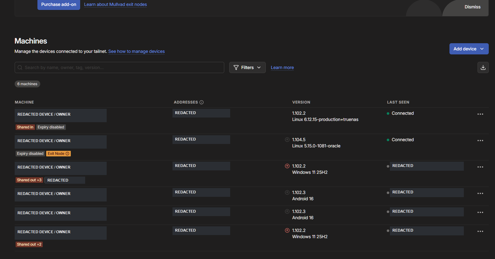

Personal storage
Used the home server as a centralized location for my files.
PAST HOMELAB / SELF-HOSTED INFRASTRUCTURE
A dedicated home server PC for personal storage, game hosting, and remote access from outside my home.
OVERVIEW
I previously operated a dedicated PC as a home server, keeping it running around the clock to provide personal storage and host game servers. I used Tailscale to access the server when I was away from home.
Used the home server as a centralized location for my files.
Hosted game server workloads on my own dedicated hardware.
Maintained a server PC that was intended to remain available 24/7.
Used Tailscale to reach my home server remotely, even when connected from outside my home network.
ARCHITECTURE
The server was located at home while Tailscale provided connectivity from my other devices when I was elsewhere. This gave me practical experience managing services independently of commercial hosting.
This diagram is a logical representation of the previous setup; it does not expose private addresses or configuration details.
OPERATING SYSTEM & REMOTE MANAGEMENT
The dedicated PC ran Windows as its host operating system. I used Tailscale for remote connectivity and Windows Remote Desktop (RDP) and Parsec for remote desktop access to manage the server when away from home.
Used Windows Remote Desktop for remote system administration.
Used Parsec as another way to access the server's desktop remotely.
REMOTE CONNECTIVITY EVIDENCE

The dashboard shows several connected or previously registered devices; it is not evidence that the former home server is still running.
LEARNING OUTCOMES
This earlier homelab complemented my later work with containerized cloud services on Oracle Cloud.